4.9 Organic Analytical Techniques · Topic 15E
Mass spectrometry, NMR spectroscopy and chromatography
4.9 Organic Analytical Techniques · Topic 15E
本页严格按 Pearson Edexcel International Advanced Level Chemistry specification 的 15E: Spectroscopy and chromatography 编排，主要依据项目内的 4.9 Organic Analytical Techniques.pdf.pdf。解释采用中文，专业词汇保留 English，便于和 Data Booklet、spectra 及 exam wording 对照。
Learning objectives
学完本章后，你应该能够：
- use high-resolution mass spectrometry data to suggest molecular formulae and calculate accurate relative molecular mass；
- use \(^{13}\mathrm{C}\) NMR chemical shifts to identify carbon environments and justify the number of peaks；
- use low-resolution \(^1\mathrm{H}\) NMR for chemical environments、integration and proton ratios；
- use high-resolution \(^1\mathrm{H}\) NMR for splitting patterns、the \((n+1)\) rule and structure deduction；
- explain mobile phase、stationary phase、TLC、\(R_f\) values、HPLC、GC and retention times；
- understand why HPLC / GC are often coupled with mass spectrometry in forensic and sports-drug testing。
15.17 High-resolution mass spectrometry
Accurate relative molecular mass
普通 mass spectrometry 可以提供 molecular ion peak、relative molecular mass 和 fragmentation information。High-resolution mass spectrometry (HRMS) 的 mass data accurate to four or more decimal places，因此可以用 accurate relative atomic masses 区分 nominal mass 相同但 molecular formula 不同的 candidates。
例如一个 compound 的 accurate \(M_r\) 为 \(58.0417\)，比较以下 possibilities：
| Formula | Calculation using accurate \(A_r\) | Accurate \(M_r\) |
|---|---|---|
| \(\ce{C4H10}\) | \((4\times12.0000)+(10\times1.0078)\) | 58.0780 |
| \(\ce{C2H6N2}\) | \((2\times12.0000)+(6\times1.0078)+(2\times14.0031)\) | 58.0530 |
| \(\ce{C3H6O}\) | \((3\times12.0000)+(6\times1.0078)+15.9949\) | 58.0417 |
所以 formula 是 \(\ce{C3H6O}\)。HRMS 可以帮助确定 molecular formula，但不能单独区分同分异构体 propanal 和 propanone；还要结合 fragmentation、IR 或 NMR data。
Worked example · HRMS calculation
某未知 compound 的 accurate molecular-ion mass 是 \(58.0417\)。使用 \(A_r(\ce{C})=12.0000\)、\(A_r(\ce{H})=1.0078\)、\(A_r(\ce{O})=15.9949\)。
\[ M_r(\ce{C3H6O})=(3\times12.0000)+(6\times1.0078)+15.9949=58.0417 \]
因此 formula 为 \(\ce{C3H6O}\)。结论只到 formula；structure 需要进一步 evidence。
15.18-15.19 Carbon-13 NMR spectroscopy
What \(^{13}\mathrm{C}\) NMR shows
Organic molecules 中大多数 carbon 是 \(^{12}\mathrm{C}\)，少量是 magnetic active 的 \(^{13}\mathrm{C}\)。在 \(^{13}\mathrm{C}\) NMR spectroscopy 中，\(^{13}\mathrm{C}\) nuclei 的 resonance position 以 chemical shift \(\delta\) 记录，reference 是 tetramethylsilane (TMS)，定义为 \(0\ \mathrm{ppm}\)。
不同 chemical environment 的 carbon 会出现在不同 chemical shift，因而谱上的每一个 sharp signal 对应一种 non-equivalent carbon environment。常规 proton-decoupled \(^{13}\mathrm{C}\) spectra 中不需要像 \(^1\mathrm{H}\) NMR 那样分析复杂 splitting patterns；signal height 也不直接等于 carbon number。
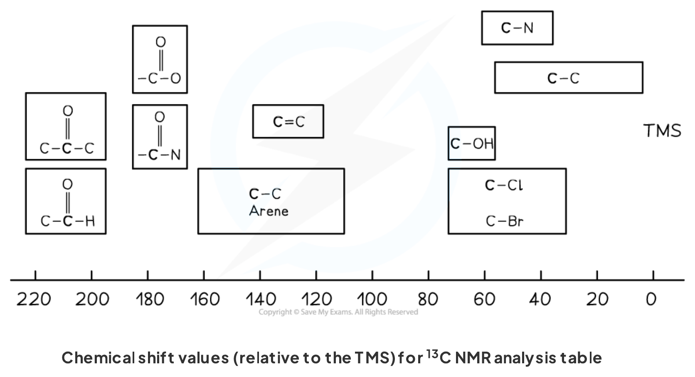
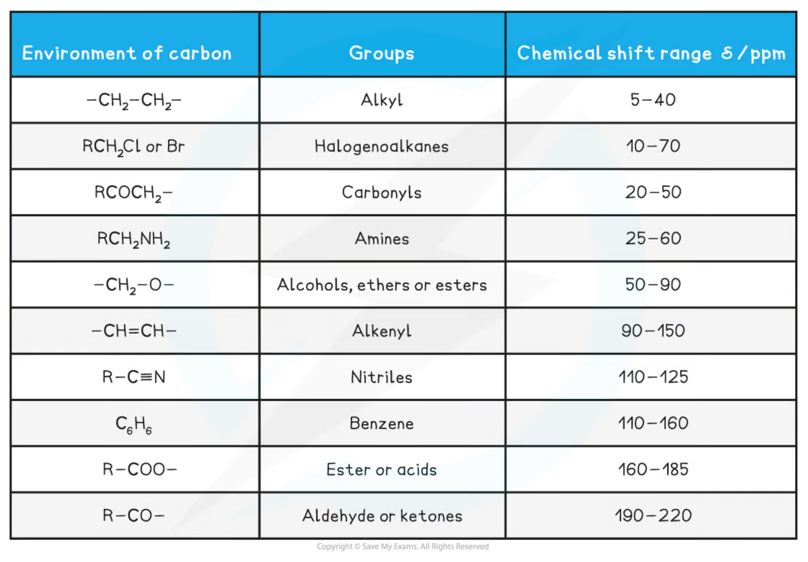
Counting carbon environments
分析 \(^{13}\mathrm{C}\) NMR 的 first step 是 count distinct carbon environments：
- 画出 molecule 的 carbon skeleton；
- 找出 symmetry，使 equivalent carbons 合并为同一 environment；
- 预测 peak number；
- 用 chemical shift 判断 functional group。
例如 propanone，两个 \(\ce{CH3}\) groups 因 symmetry equivalent，所以只有 two carbon environments：一个 carbonyl carbon 和一个等价的 methyl environment，因此出现 two signals。
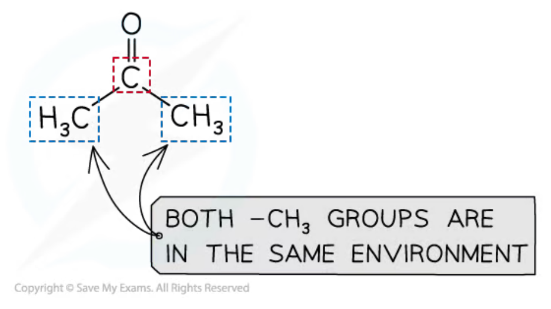
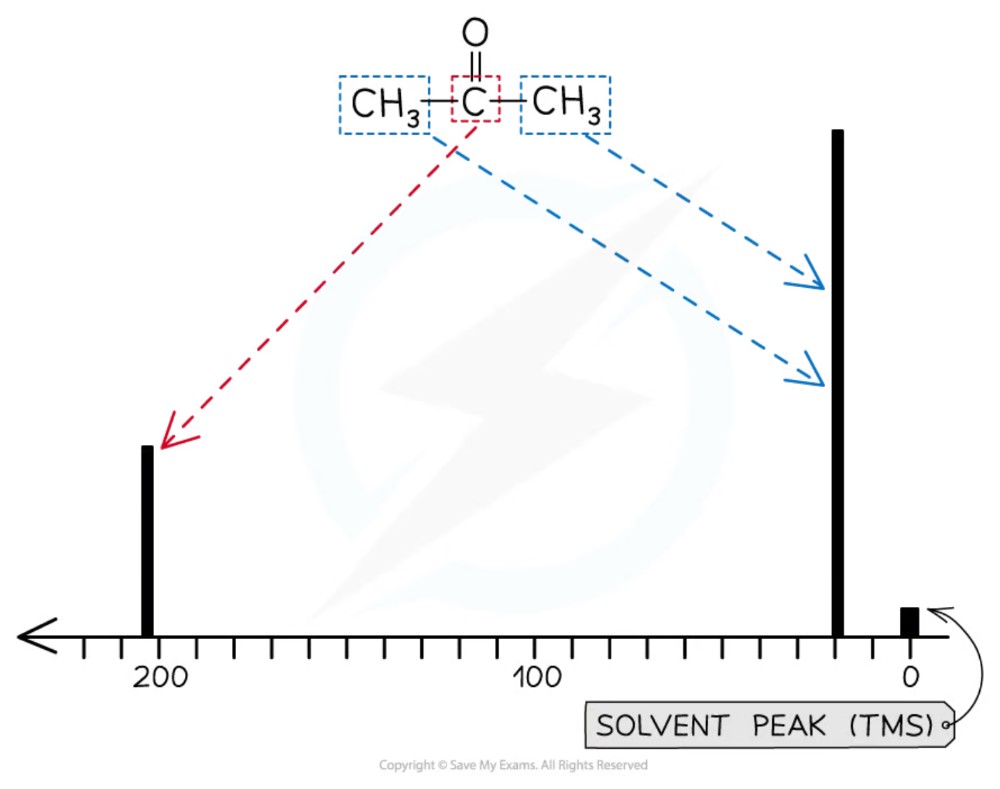
Symmetry and isomers
Molecules with the same molecular formula 可能有不同 number of \(^{13}\mathrm{C}\) signals。对 dihydroxybenzene isomers，先考虑 symmetry，再 count environments。例如 1,3-dihydroxybenzene 有 four distinct carbon environments，因此有 four resonances。
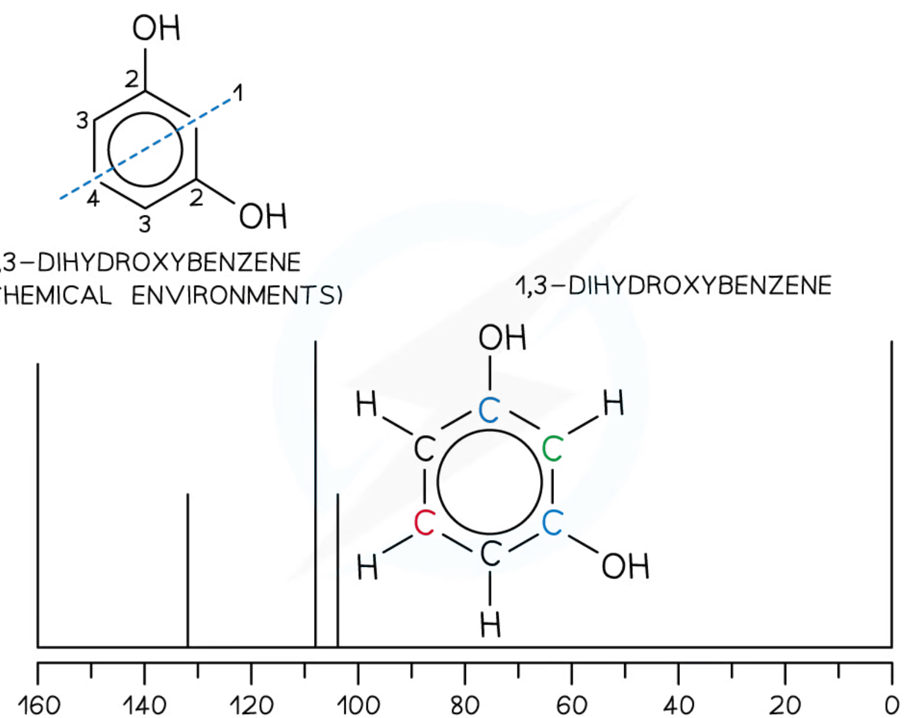
15.20 Low-resolution proton NMR
TMS and chemical shift
\(^1\mathrm{H}\) NMR spectroscopy 以 TMS 作 reference compound，TMS signal 定义为 \(\delta=0\ \mathrm{ppm}\)。TMS 适合用作 standard，因为它 chemically unreactive、single sharp peak、容易与 sample 分离。
Chemical shift \(\delta\) 的单位是 ppm，表示 protons 相对于 TMS 的 resonance position。不同 proton environment 会产生不同 signal。
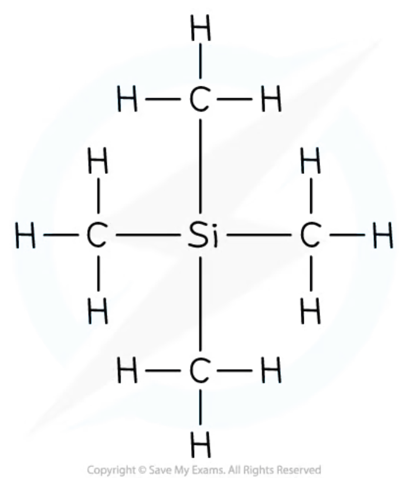
Molecular environments and integration
在 low-resolution \(^1\mathrm{H}\) NMR 中，每一个 signal 代表一种 chemically non-equivalent proton environment。Signal 下的 area 与产生该 signal 的 equivalent protons 数目成比例。
以 ethanol，\(\ce{CH3CH2OH}\) 为例：
- \(\ce{CH3}\)：one environment，3 H；
- \(\ce{CH2}\)：one environment，2 H；
- \(\ce{OH}\)：one environment，1 H。
所以有 three signals，integrated area ratio 为 3:2:1。OH proton 经常发生 proton exchange，通常显示为 singlet；具体 shift 会随 solvent、concentration 和 hydrogen bonding 改变。
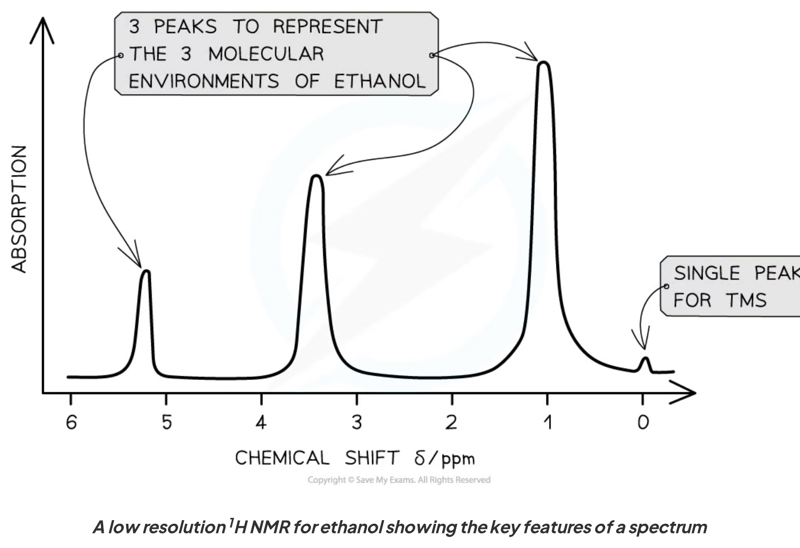
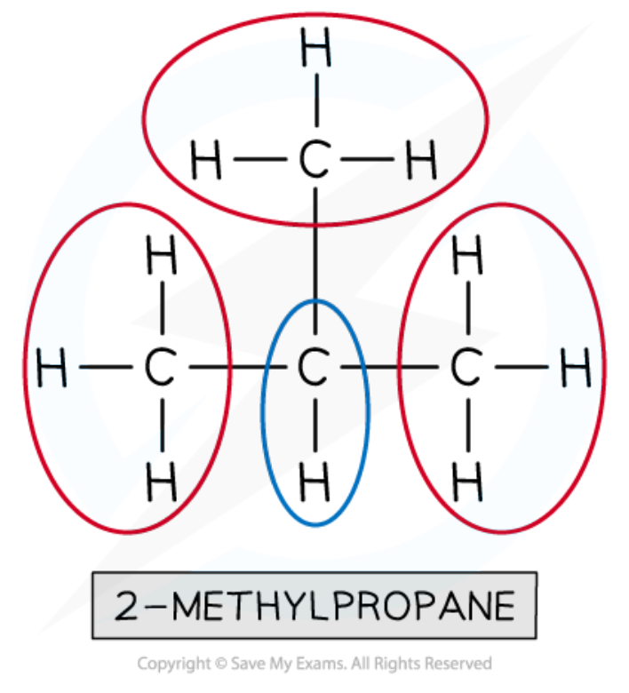
1,2-dichloroethane 的 four hydrogen atoms 完全 equivalent，因此只产生 one proton environment 和 one \(^1\mathrm{H}\) NMR signal。
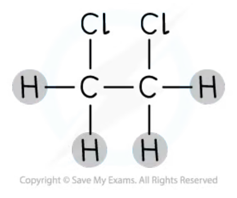
Common \(^1\mathrm{H}\) chemical-shift ranges
Use the Data Booklet ranges rather than memorising a single exact value：
| Proton environment | Typical \(\delta\) / ppm |
|---|---|
| \(\ce{R-OH}\) | 0.5-5.5 |
| alkyl \(\ce{RCH3}\) | 0.7-1.2 |
| alkyl \(\ce{R2CH2}\) | 1.2-1.4 |
| next to carbonyl, \(\ce{RCOCH3}\) | 2.1-2.6 |
| next to oxygen, \(\ce{ROCH3}\) | 3.1-3.9 |
| next to halogen, \(\ce{RCH2Cl/Br}\) | 3.1-4.2 |
| ester \(\ce{RCOOCH3}\) | 3.7-4.1 |
| alkene \(\ce{C=CH}\) | 4.5-6.0 |
| aldehyde \(\ce{RCHO}\) | 9.0-10.0 |
| carboxylic acid \(\ce{RCOOH}\) | 10.0-12.0 |
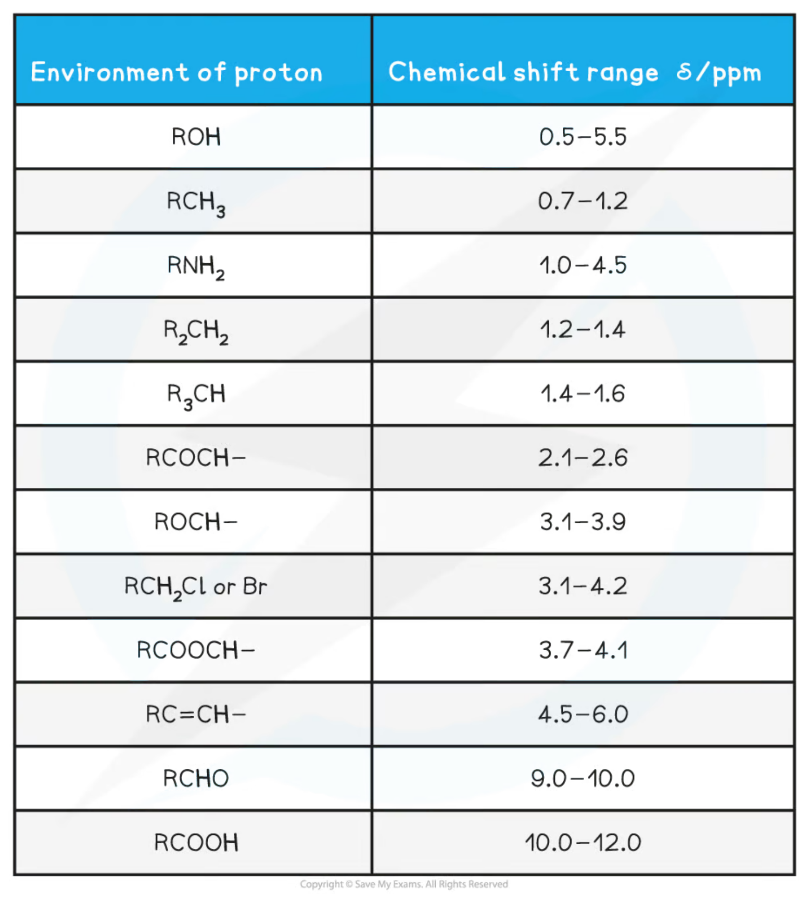
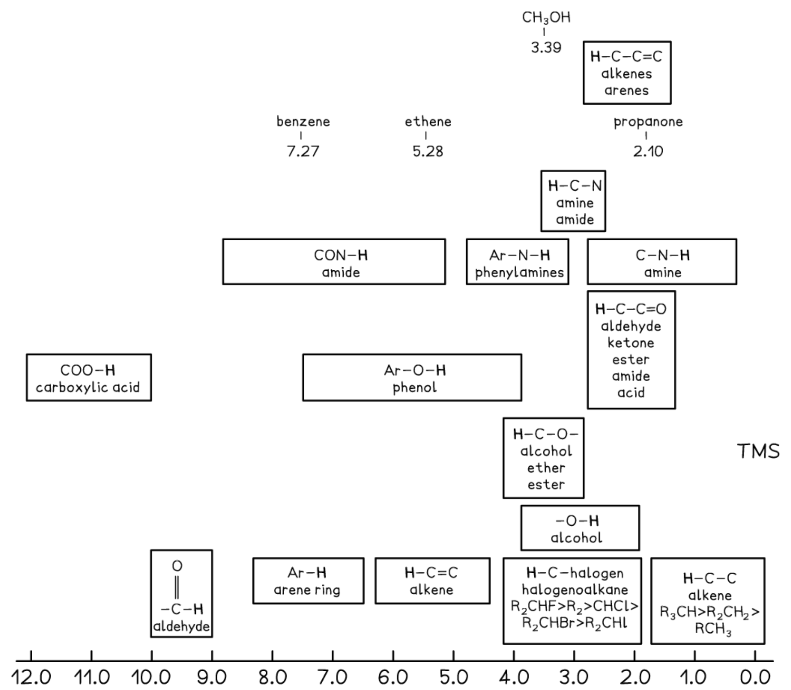
Worked example · low-resolution \(^1\mathrm{H}\) NMR
对于 methyl chloroethanoate，\(\ce{ClCH2COOCH3}\)：
- \(\ce{ClCH2-}\) 和 \(\ce{-OCH3}\) 是 two proton environments，因此有 two signals；
- proton ratio 是 \(2:3\)；
- \(\ce{ClCH2-}\) 的 shift 在约 \(3.1-4.2\ \mathrm{ppm}\)；\(\ce{-OCH3}\) 属于 ester proton，约在 \(3.7-4.1\ \mathrm{ppm}\)。
先由 number of signals 和 integration ratio 建立 skeleton，再用 chemical shift 验证 functional groups。
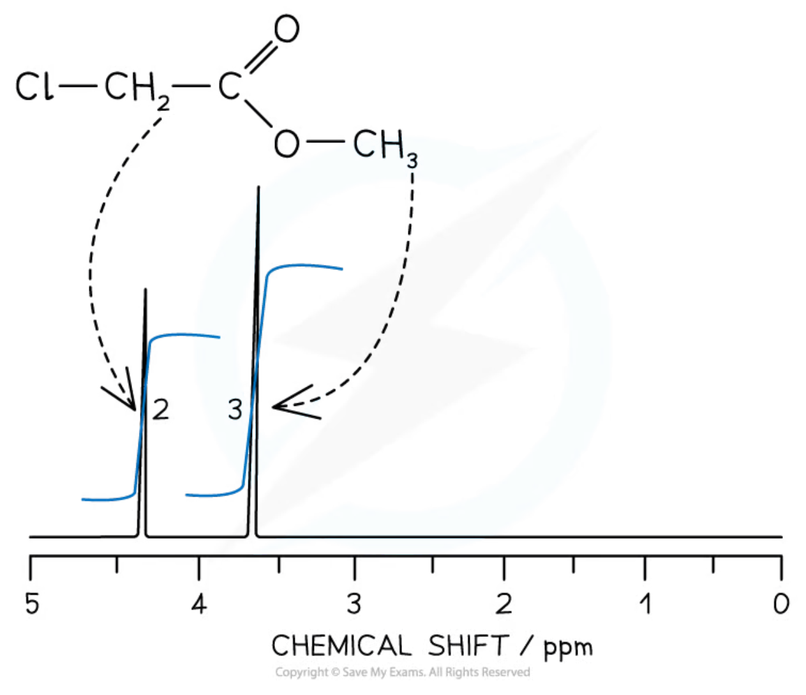
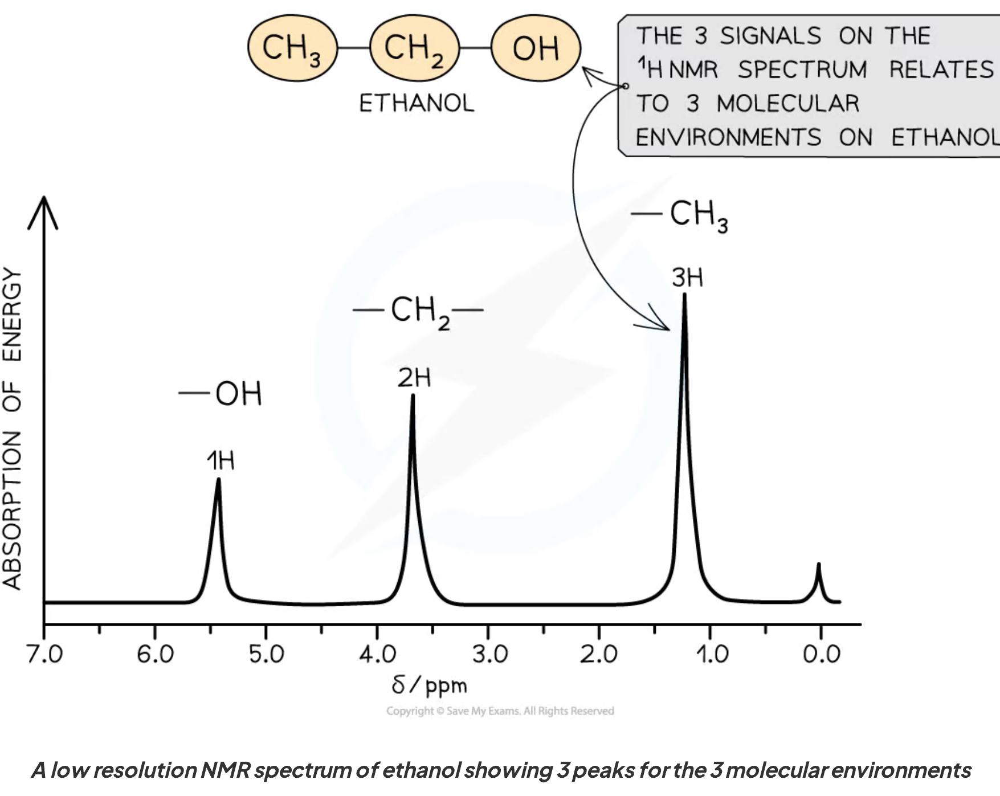
15.20 High-resolution proton NMR
Spin-spin splitting and the \((n+1)\) rule
在 high-resolution \(^1\mathrm{H}\) NMR 中，一个 signal 可能 split 成 several sub-peaks。这是一个 proton 与 adjacent carbon 上的 non-equivalent neighbouring protons 发生 spin-spin coupling 的结果。
若相邻 carbon 上有 \(n\) 个 equivalent neighbouring protons，则 signal split into \(n+1\) sub-peaks：
| Adjacent protons \(n\) | Splitting | Relative intensity |
|---|---|---|
| 0 | singlet | 1 |
| 1 | doublet | 1:1 |
| 2 | triplet | 1:2:1 |
| 3 | quartet | 1:3:3:1 |
OH / NH protons 常因 proton exchange 不表现出 predictable coupling。两个 adjacent signals 的 splitting 也应互相对应，例如 \(\ce{CH3CH2-}\) 常出现 triplet + quartet。
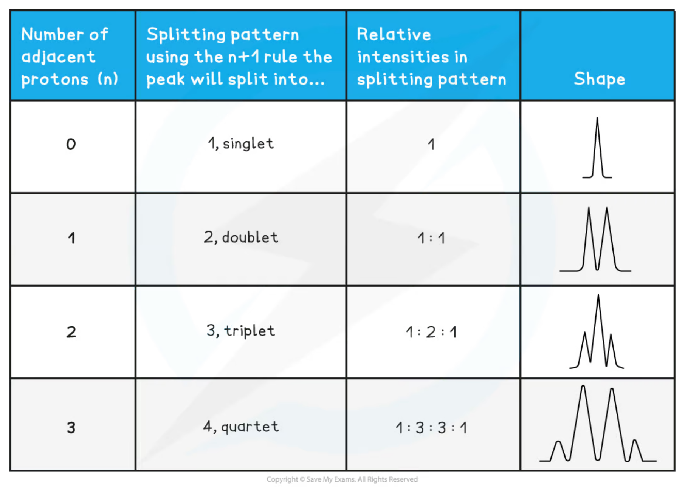
Ethanol: triplet, quartet and singlet
For ethanol，\(\ce{CH3CH2OH}\)：
- \(\ce{CH3}\) 有 2 个 adjacent \(\ce{CH2}\) protons，所以是 triplet；
- \(\ce{CH2}\) 有 3 个 adjacent \(\ce{CH3}\) protons，所以是 quartet；
- \(\ce{OH}\) 通常是 singlet，因为 proton exchange。
每个 signal 的 chemical shift、integration area 和 splitting pattern 必须同时一致，才足以支持 structure。
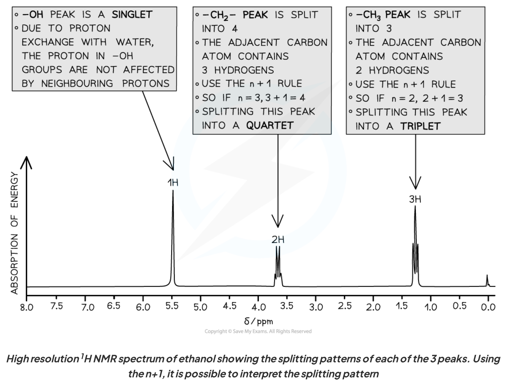
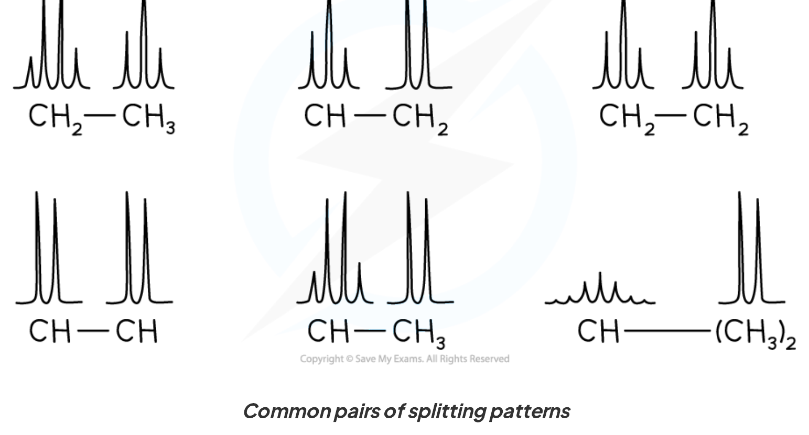
Applying NMR to a structure
建议按以下顺序分析 high-resolution \(^1\mathrm{H}\) spectrum：
- count number of signals \(→\) number of proton environments；
- use integrated areas \(→\) proton ratio；
- use chemical shifts \(→\) functional-group environments；
- use splitting patterns \(→\) number of adjacent protons；
- assemble candidate structure，并检查 molecular formula 和 unsaturation 是否一致。
例如 propane 的 central \(\ce{CH2}\) 被两侧共 six equivalent protons split 成 heptet；两组 equivalent \(\ce{CH3}\) 被 \(\ce{CH2}\) split 成 identical triplets。
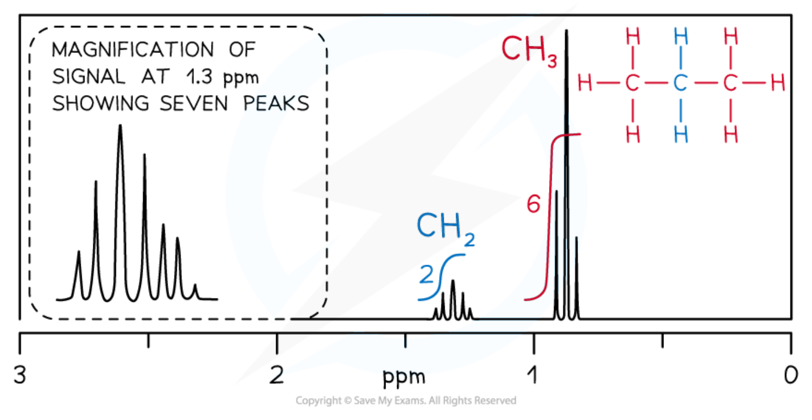
15.21-15.22 Thin-layer chromatography
Principles of chromatography
Chromatography separates components of a mixture because different substances interact differently with a stationary phase and a mobile phase：
- stationary phase：固定不动的 material；
- mobile phase：流动并带走 sample components 的 fluid；
- component 与 stationary phase interaction 越强，移动越慢；
- component 在 mobile phase 中 solubility 越大，移动越快。
对于 TLC，stationary phase 通常是 silica / alumina 固体薄层，mobile phase 是 liquid solvent。TLC、column chromatography 和 gas-liquid chromatography 的 phase comparison 如下。
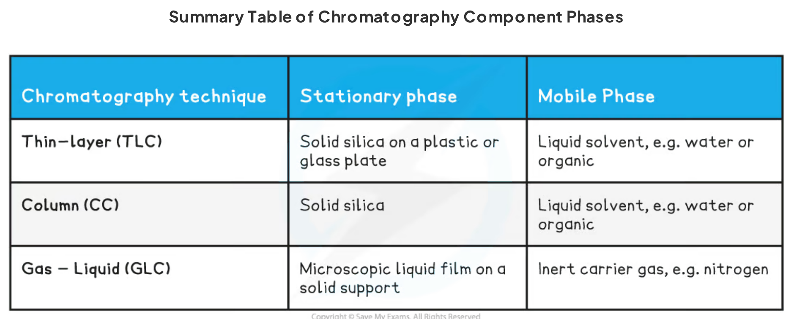
TLC procedure
Thin-layer chromatography（TLC）的基本步骤：
- 在 plate 底部用 pencil 画 baseline；
- 把 pure reference compounds 和 unknown sample 点在 baseline 上，晾干；
- 将 plate 放入少量 solvent，solvent level 必须低于 spots；
- 盖上 container，让 solvent 上升并 carry components；
- solvent 接近顶部时取出，马上用 pencil 标记 solvent front；
- 用 colour、UV light、iodine vapour 或 ninhydrin locate spots。
Baseline 必须用 pencil，不能用 ink，因为 ink 会被 solvent 溶解并干扰 chromatogram。
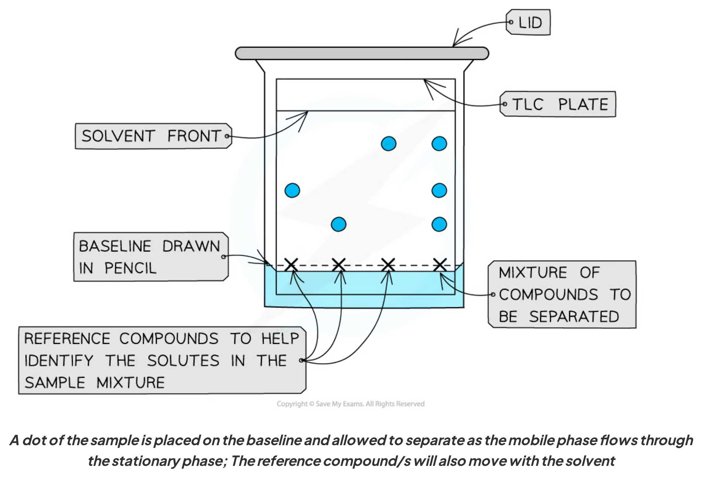
Retention factor, \(R_f\)
\[ R_f=\frac{\text{distance travelled by component}}{\text{distance travelled by solvent front}} \]
同一 solvent、stationary phase 和 temperature 下，compound 的 \(R_f\) 可与 reference compound 比较。\(R_f\) 通常在 0 和 1 之间，且 sample spot 只测 baseline 到 spot centre 的 distance。
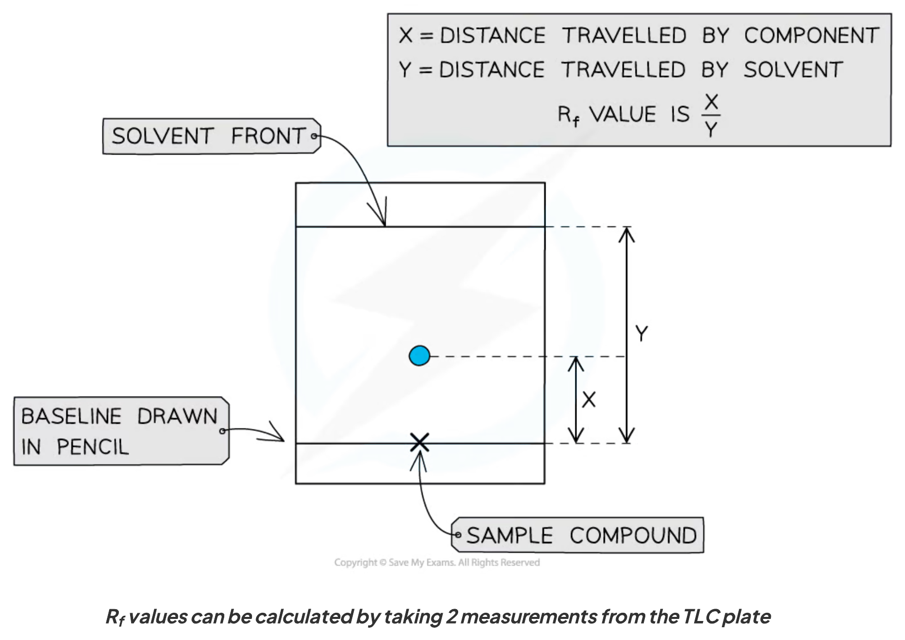
15.23 HPLC and GC
Column chromatography and HPLC
在 column chromatography 中，sample 随 mobile phase 通过 packed stationary phase。与 stationary phase attraction 最强的 component retention time longest。
High-performance liquid chromatography (HPLC) 是 automated column chromatography：
- mobile phase 由 pump 加压通过 column，而不是只靠 gravity；
- stationary-phase particles 更小，separation efficiency 更高；
- detector 记录各 component 的 retention time；
- computer 可把 chromatogram 与 known database 比较。
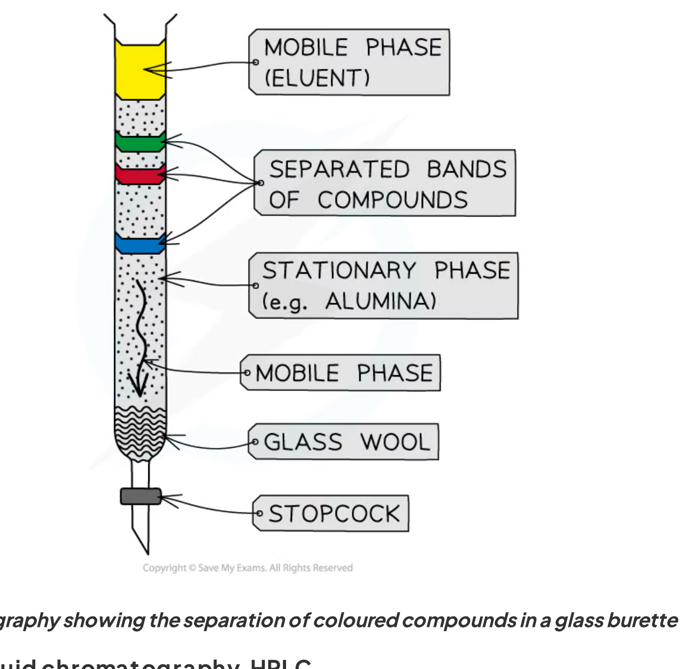
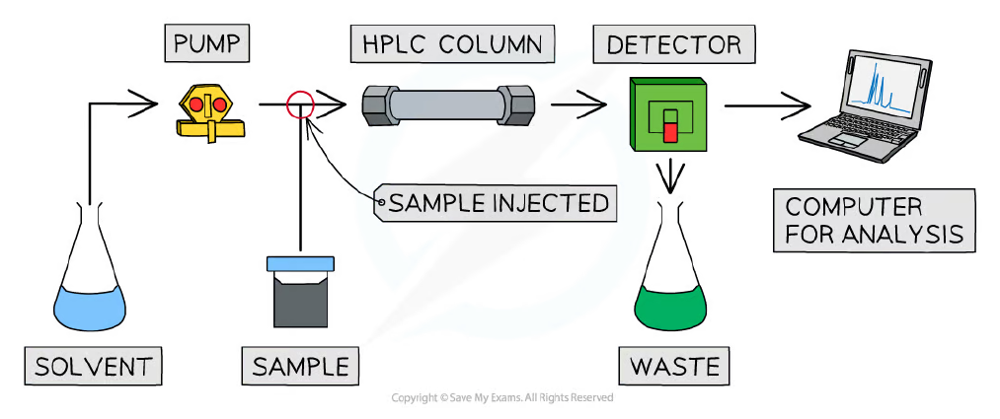
Gas chromatography (GC / GLC)
Gas chromatography，也称 gas-liquid chromatography（GLC），适用于 gases、volatile liquids 或可 vaporise 的 solids：
- stationary phase 是 coated on a solid support 的 non-volatile liquid film；
- mobile phase 是 inert carrier gas，例如 helium 或 nitrogen；
- sample 被 vaporised 后注入 column；
- different compounds 因与 stationary phase interaction 不同而有不同 retention times。
Chromatogram 中每一个 peak 通常代表一个 component；retention time 可用于 identification，peak area / relative size 可估计 relative amount。
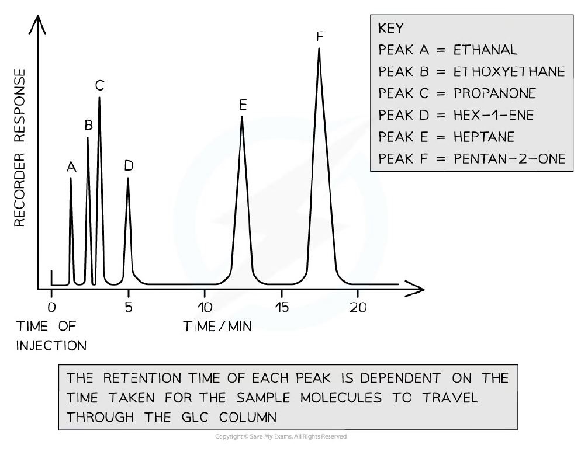
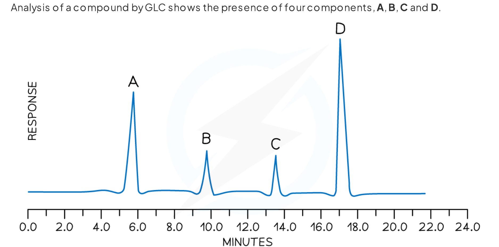
HPLC vs GC
| Feature | HPLC | GC / GLC |
|---|---|---|
| Mobile phase | liquid solvent | inert carrier gas |
| Stationary phase | solid particles in packed column | non-volatile liquid film on solid support |
| Best suited to | dissolved, non-volatile or thermally unstable samples | gases and volatile / vaporised samples |
| Main readout | retention time and peak area | retention time and peak area |
| Common coupling | HPLC-MS | GC-MS |
Retention time alone is not absolute proof of identity，因为 different compounds 可能偶然有相同 retention time；要结合 standard、spectra 或 mass spectrometry。
Applications and limitations
HPLC / GC 可用于：
- forensic evidence；
- sports drug testing；
- environmental pollution analysis；
- explosives detection；
- separating small amounts of mixture components。
但 chromatography 单独使用的 limitations 包括：不同 compounds 可能有相似 retention times，experimental conditions 不易完全一致，database 中也可能没有 unknown reference。因而常与 mass spectrometry coupled，形成 HPLC-MS 或 GC-MS：先 separation，再用 mass spectrum 提供 molecular / fragmentation evidence。
Sports drug testing 的 forensic interpretation 要结合 method validation、calibration、reference standards 和 threshold，而不能只凭一个 chromatogram peak 下结论。
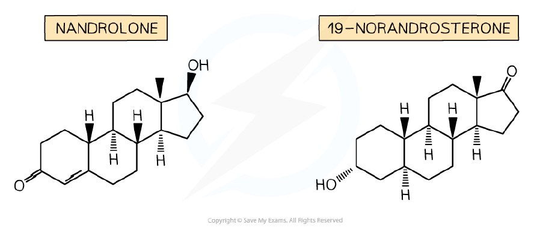
Integrated structure-deduction workflow
Combining techniques
一个可靠的 organic structure deduction 通常把不同 evidence 合并：
- HRMS：确定 accurate molecular formula；
- \(^{13}\mathrm{C}\) NMR：确定 carbon environments、symmetry 和 carbon functional groups；
- low-resolution \(^1\mathrm{H}\) NMR：确定 proton environments 与 integration ratio；
- high-resolution \(^1\mathrm{H}\) NMR：用 \((n+1)\) rule 确定 adjacent protons；
- TLC / HPLC / GC：判断 mixture composition、compare retention data 或分离 sample；
- MS fragmentation / IR / chemical tests：作为 supporting evidence。
不要把一个 technique 的 information over-interpret：HRMS 给 formula，不直接给 structure；\(^{13}\mathrm{C}\) NMR 给 carbon environments；chromatography 的 retention time 也不能单独作为 conclusive identification。
Exam checklist
Source note
本页面对应：Note per Chapter/Note per Chapter/4.9 Organic Analytical Techniques.pdf.pdf；考纲范围对应 International-A-Level-Chemistry-Spec 的 15E: Spectroscopy and chromatography（15.17–15.23）。页面中的示意图均从本章 note 独立提取并保存到 assets/notes/analytical/，便于单独放大和复用。